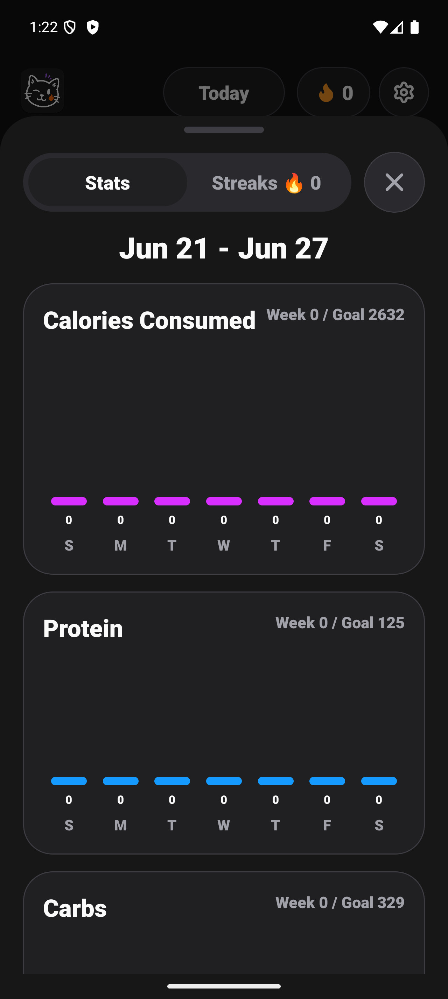
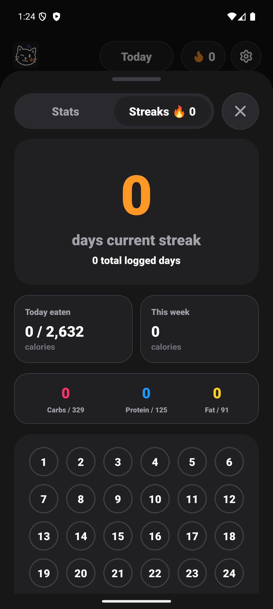

Amy Logging, Widget, and Stats Fix Conclusion
Final Status
Complete. The requested logging, widget, stats, streak, macro, and release-prep fixes were implemented, locally built, emulator-smoke-tested, reviewed by parallel worker threads, and sent to EAS Preview.
What Changed
- Photo, barcode, and saved-meal capture can force a visible note line even when the line duplicates an existing prompt, fixing the counted-calories-with-no-text behavior.
- Today merges external note updates while editing, and the right calorie rail tracks TextInput scroll offset so long notes stay aligned.
- Current streak is now contiguous; total logged days is shown separately.
- Stats modal header now uses only the top tabs plus close button. The duplicate Stats title was removed.
- Stats bars show actual values, and Streaks shows current streak, total logged days, today eaten, week calories, macro totals, and calendar.
- Macro rings now use SVG stroke progress and distinct macro colors instead of static/all-green circles.
- Android widgets now use consumed/logged calorie language, consistent fire calorie labels, vector action icons, resize metadata, weighted layouts, and refresh-on-resize hooks.
- Release metadata was advanced to Amy 1.0.6 / Android versionCode 8, including Fastlane changelog 8.
Parallel Review Threads
- Harvey
019f078e-901f-7d92-be91-584527a3bb46: PASS for photo/prompt note-line visibility and Today rail scroll alignment. Static/typecheck review only. - Einstein
019f078e-9255-7480-a79c-078c8c6bc811: PASS for Stats header, contiguous streaks, Streaks totals, and macro progress rings. - Fermat
019f078e-938d-70a2-8c49-dfc05db29aff: PASS for widgets/release packaging after finding the missing Fastlane changelog 8, which was added.
The user-visible Codex thread API described by Oracle was not exposed in this environment, so these were private multi-agent worker threads rather than Codex app threads.
Verification
npm run audit:release: PASS. Runsnpm test,expo install --check, andnpx expo-doctor; Expo Doctor reported 21/21 checks passed.git diff --check: PASS after removing two tab-only whitespace lines in the widget plugin.node --check plugins/withAmyAndroidWidgets.js: PASS.npm run prebuild:android: PASS.ANDROID_HOME="$HOME/Library/Android/sdk" ANDROID_SDK_ROOT="$HOME/Library/Android/sdk" npm run build:local:android: PASS.aapt2 dump badging builds/amy-1.0.6-oracle-fixes-20260627.apk: PASS, packagecom.kaust.amy, versionName1.0.6, versionCode8.- ADB deep-link checks resolved
amy://stats,amy://capture/photo, andamy://scan/barcodetocom.kaust.amy/.MainActivity. - ADB UI dump and screenshots verified the new Stats/Streaks header and Streaks summary content on the Android emulator.
Builds
- Local APK:
/Users/kaust/Documents/amy/builds/amy-1.0.6-oracle-fixes-20260627.apk - Local APK SHA-256:
45ad1fcaf11e340dd924adc1d4324352a997a62a3ed8ba07b4637f37763e37e8 - EAS build ID:
f3bda37d-d605-48d4-a419-41df69651fe3 - EAS status: FINISHED, Android, preview, internal distribution, appVersion
1.0.6, appBuildVersion8 - EAS install page: Expo build page
- EAS APK artifact: application APK
Demo Evidence


Peekaboo screenshot capture worked, but AI visual analysis through Peekaboo was blocked by a missing OPENAI_API_KEY. ADB screenshots and UI dumps were used for emulator proof.
Known Limitations
- Widget resize behavior was verified through generated XML/provider code and APK registration, not by dragging widgets on a launcher surface.
- Photo model responses were not end-to-end proven with a live OpenRouter image call during emulator smoke testing; the code path and TypeScript checks passed.
- The working tree was already dirty before this run with docs/release files. Those unrelated existing changes were preserved.